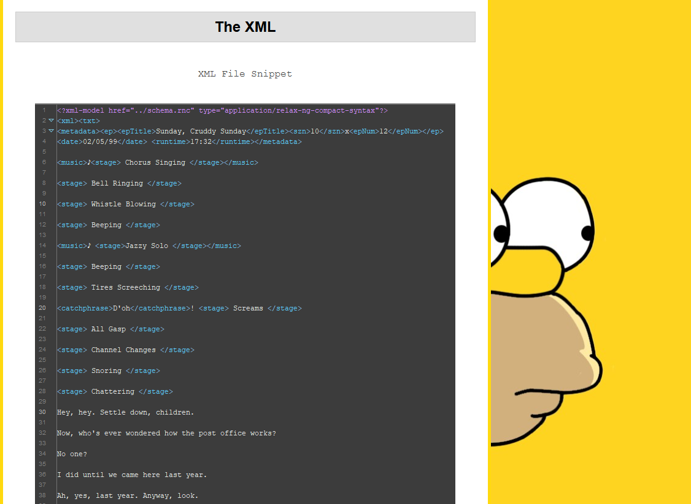

This project investigates how The Simpsons has changed over time by tracking character appearances, repeated phrases, and broader shifts across the series. Instead of analyzing every season, we focused on Seasons 1, 10, 20, and 30 because they’re spaced roughly ten years apart and highlight long-term trends.
To perform the analysis, we structured the show data using XML and then used XQuery to extract counts and patterns (characters, phrases, and other measurable changes) across the selected seasons.
Project Links:
GitHub Repository
Live Website